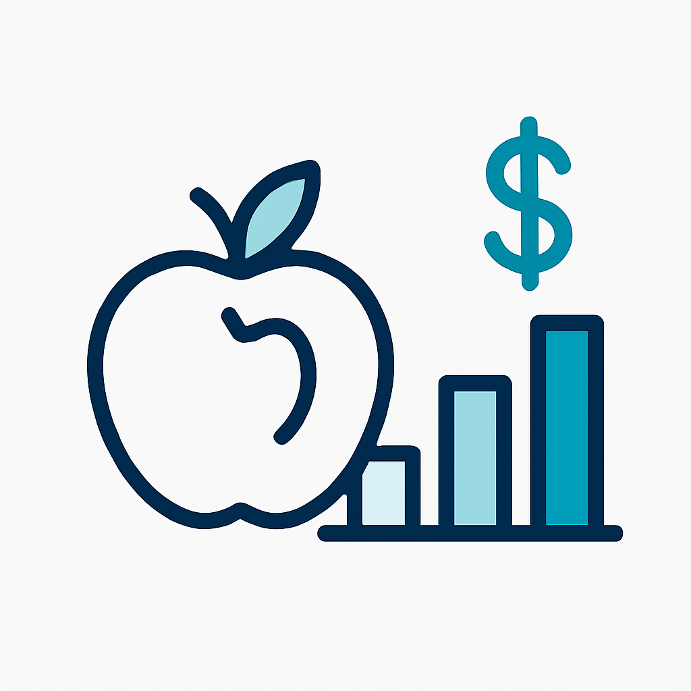

Nutrition Cost Analysis
Explore cost-per-calorie and macronutrient value with this Tableau dashboard.
View on GitHubThis is a caption
ButtonExplore cost-per-calorie and macronutrient value with this Tableau dashboard.
View on GitHubPython + SQL project for uncovering fraud signals and identifying high-risk loan profiles.
View on GitHubA front-end dashboard for monitoring conversion KPIs and dropoff points.
View on GitHubVisual breakdown of customer communications across chat, phone, and email platforms.
View on GitHubI like piña coladas and getting caught in the rain.